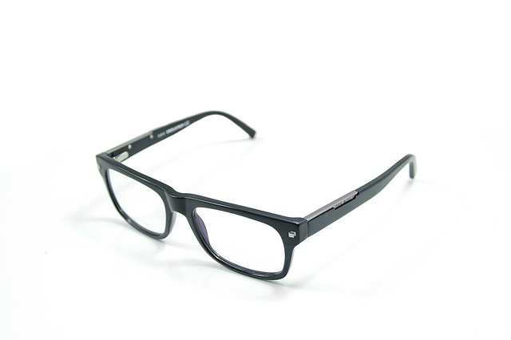
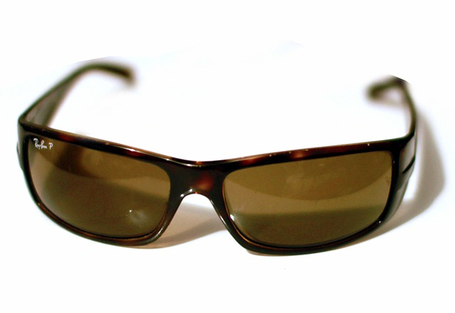
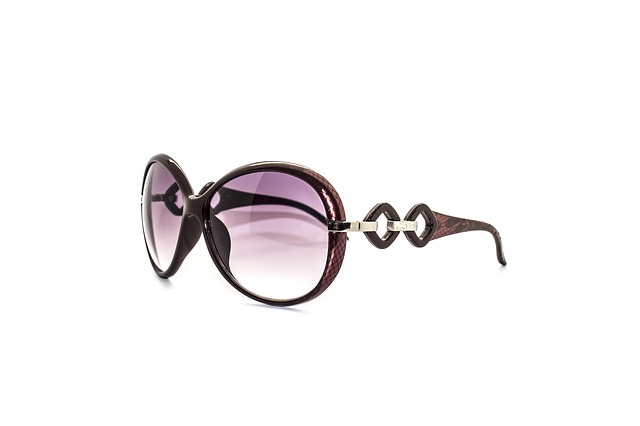

We are a Brisbane based company which is well regarded locally. We are recognised as being able to manage children’s needs with a professional caring approach.
We employ two full-time, in-store qualified optometrists able to diagnose and treat a number of eye related problems. Our optometrists strive to make a positive difference to the health and well-being of our customers, endeavouring to obtain the best visual outcome so that customers realise their full potential in work, study, sport and leisure.
Our Services
Here is a list of services we provide
Eye Examinations (may be bulk billed)
Spectacles (may be bulk billed to private Health Fund optical cover)
Diabetic eye examinations
Colour Vision assessments
Macular Degeneration tests
Glaucoma & eye pressure testing
Checks for Cataracts
Clearness of vision (myopia, hyperopia, astigmatism)
Focusing ability (Presbyopia)
Eye muscle movement and control
Amblyopia (lazy eye)
Contact lens fitting and management
Referrals for eye laser surgery
Mining & Industrial Safety Spectacles
Advice on the correct fitting of good quality sunglasses
Our Products
We have a selection of products that suits you, ranging from ophthalmic glasses, sunglasses, and contact lenses



Feel free to contact us!
Address: The Myer Centre, Queen Street Mall, Level 1, shop number 36